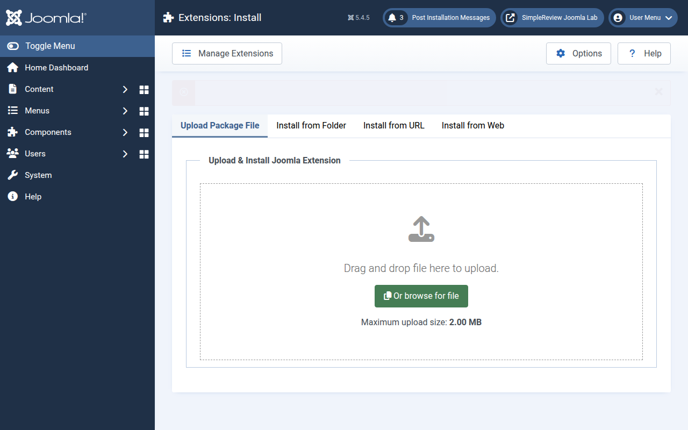
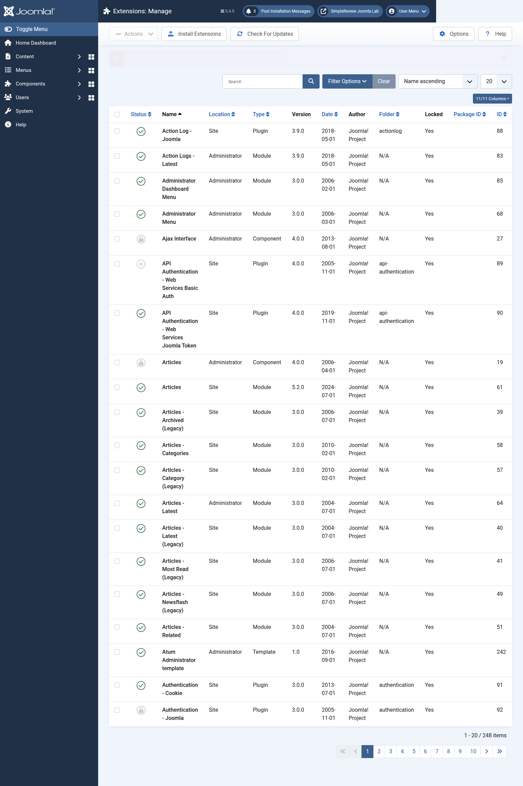
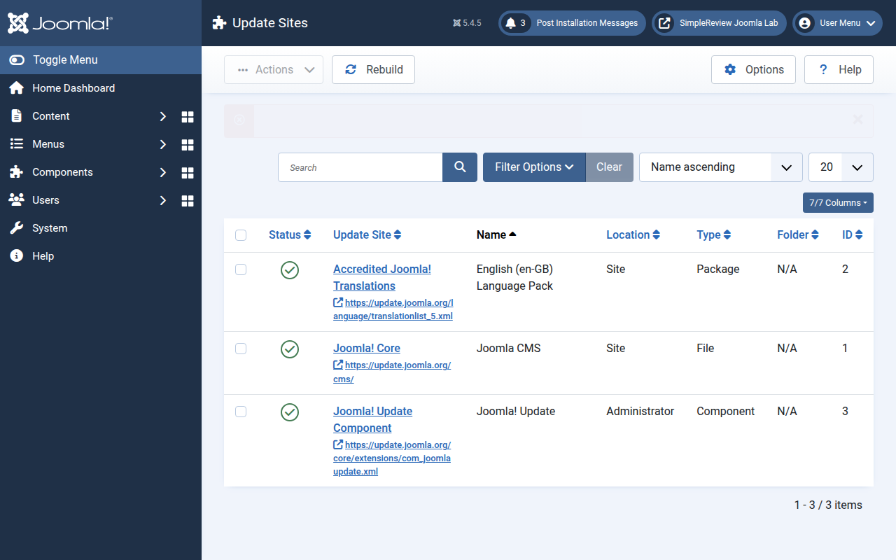

Joomla Extension “Searching for Errors” Fix: Install, Update Sites, and Discover
When people search for “Joomla extension searching for errors”, they usually do not mean one single Joomla error. They mean the extension flow is stuck somewhere: the ZIP will not upload, the plugin installed but is disabled, update checks never finish, or the extension files were copied by FTP and Joomla cannot see them. This guide gives you the shortest reliable path through Joomla 4/5 extension screens before you pay for custom work.
Fast triage: use System → Install → Extensions for package problems, System → Manage → Extensions for disabled or locked extensions, System → Update → Update Sites for update XML problems, and System → Install → Discover when files were uploaded manually. The screenshots below were captured from a real Joomla 5.4.5 Docker install, not a mock UI.
The three screens that matter first
Do not start by editing database tables. Joomla already exposes enough signal in the administrator UI to separate a bad package from a bad update server or a disabled plugin. In a clean Joomla 5.4.5 install, the extension workflow begins at System → Install → Extensions.

If the package uploads but the extension “does nothing”, go to Manage Extensions before you reinstall it three times. Modules and plugins often need to be enabled after installation; core extensions may be locked; and a disabled plugin can look like a broken install from the frontend.

For update problems, Update Sites is the next screen. Joomla extension updates depend on XML endpoints. If those rows are stale, disabled, missing, or pointing to a vendor URL that no longer responds, update checks can appear to hang or silently show no available update.

Fix the common install errors in order
- Confirm the package is a Joomla extension ZIP. A common failure is a nested archive: the downloaded ZIP contains documentation plus a second installable ZIP. Joomla expects the installable extension package at upload time.
- Check upload limits. The real installer screen above shows a 2 MB maximum in this Docker setup. Shared hosting often has low
upload_max_filesizeorpost_max_size. Use Install from Folder when the package is legitimate but too large. - Check the temporary path. Joomla stores and unpacks uploads in
/tmpduring install. A wrong or unwritable temp path breaks packages that are otherwise valid. - Read the extension manifest. The manifest tells Joomla the extension type, version, target files, update servers, and sometimes PHP/Joomla constraints.
- Enable the right thing after install. Components appear under Components, modules need assignment, and plugins usually need to be enabled in Manage Extensions or Plugins.
Official Joomla user docs describe the standard upload path as: download the ZIP, go to System → Install → Extensions, choose the file or drag it into the upload area, and then enable modules/plugins when required. The same docs point to Install from Folder for packages that are too large for the web uploader.
When update checks are the real problem
Joomla update discovery is not magic. The developer documentation describes it as a two-step flow: Joomla finds updates for installed extensions, then installs the selected update. Each extension can register an update server URL; Joomla fetches XML, checks that the XML is well formed, compares versions, checks platform restrictions, and then writes a matching row into #__updates.
| Symptom | Most likely cause | What to check |
|---|---|---|
| “No updates found” but vendor has a new version | Update site missing, disabled, or stale | System → Update → Update Sites → Rebuild; verify the vendor XML URL still opens |
| Update appears, then fails | Download URL, license key, PHP version, Joomla target version, or vendor server issue | Update XML restrictions, vendor download key, PHP version, Joomla 4/5 compatibility |
| Update check is slow or hangs | One or more remote update XML endpoints time out | Temporarily disable suspect third-party update sites and rerun Check For Updates |
| Pre-update check complains about database structure | Schema tracking issue, often from non-standard installs or failed migrations | System → Maintenance → Database before touching SQL |
Do not delete update sites blindly. Some paid extensions rely on vendor-specific update endpoints and download IDs. Rebuild first, then disable only the row you are testing, and record the before/after state.
Use Discover only for manually uploaded files
System → Install → Discover is not a general repair button. Use it when extension files were already placed into Joomla’s expected directories by SFTP/FTP, commonly because the normal uploader cannot handle the package size. Joomla’s user documentation lists typical component paths such as site files under components/com_example, administrator files under administrator/components/com_example, media under media/com_example, and language files under the relevant language directories.
If Discover finds nothing, one of these is usually true: files are in the wrong directory, the extension manifest is missing, the archive was unpacked one directory too deep, or the package is not compatible with the Joomla version you are running.
Database checks come late, not first
The official Joomla problem note for database table structure is narrow: it describes a pre-update check mismatch where the maintenance page does not show the same error, and points to missing schema data. That is not a reason to run random SQL from a forum post. If you get a database-structure warning, first use System → Maintenance → Database. Only then consider a database client, and only after a backup.
How SimpleReview helps without turning this into a ticket
SimpleReview for Joomla is useful when the error has a file-level or configuration-level fix: broken template override, language override, plugin enablement, update XML mismatch, manifest constraint, or PHP compatibility warning. It captures the exact screen, checks the Joomla file layout, and prepares a site-ready fix you can upload or deploy.
It will not pretend to solve vendor-side problems. If a paid download server rejects your license key, if a closed-source extension has no Joomla 5 build, or if the database needs risky surgery, the right output is a clear handoff to Vibers human review with screenshots, logs, and the exact admin screen.
Fix the Joomla screen you can actually see
Click the broken frontend or administrator element, let SimpleReview inspect the Joomla paths, and get a site-ready fix instead of another vague support thread.
Install SimpleReview